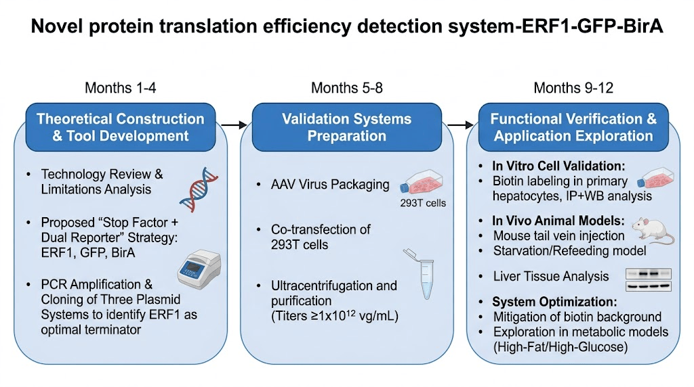
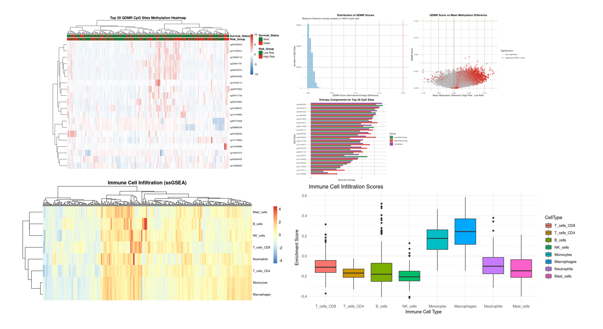
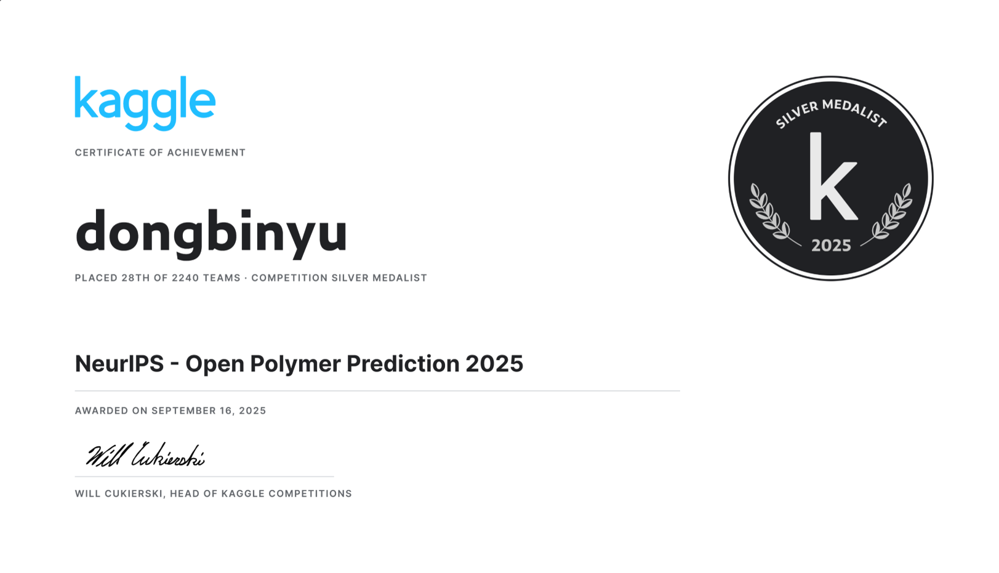

Selected work · 2024—Present
Research
Experimental and computational projects at the intersection of biomaterials, molecular biology, and data science.
Hydrogel-based wound repair
Undergraduate Researcher · Professor Qiuyue Ma's Lab, HIT
Working across the full experimental process for hydrogel-based wound repair in diabetic rat models, from model establishment and local administration to healing monitoring and tissue analysis.
- Established diabetic rat, oral ulcer, and skin wound models
- Prepared and characterized functional hydrogels
- Conducted histopathology, immunohistochemistry, and cytokine analysis

Protein translation efficiency detection
Undergraduate Researcher · Professor Chen Zheng's Lab, HIT
Developed experimental independence through molecular biology and hydrogel anti-inflammatory projects, including the design of a novel assay for protein translation efficiency.
- Molecular cloning, co-IP, Western blotting, RNA extraction, and frozen sectioning
- Designed and troubleshot experimental protocols independently
- Participated in hydrogel anti-inflammatory research

Colorectal cancer prognosis analysis
Independent Project Lead
Built a prognosis analysis workflow using the TCGA-COAD dataset, combining differential expression, survival analysis, immune infiltration profiling, and predictive modeling.
- Constructed a LASSO-Cox prognostic risk model
- Achieved AUC > 0.75 for five-year survival prediction
- Identified tumor microenvironment-related biomarkers

NeurIPS Open Polymer Prediction
Team Lead & Main Programmer · Kaggle Silver Medal
Ranked 28th out of 2,240 teams by developing an ensemble pipeline for polymer physical-property prediction.
- Engineered molecular descriptors and structural features
- Combined XGBoost, LightGBM, and graph neural networks
- Optimized cross-validation and hyperparameter strategies
